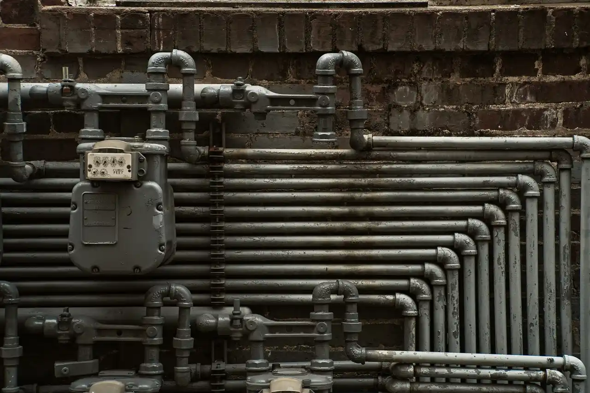

Readings shared after each visit
After every visit you get a short written summary of what was found, what was done and what happens next. Move over the photo for an illustrative thermal view.
When a pipe bursts at 2 a.m. or your water heater quits before a holiday, Plumbing Arlington Heights IL homeowners trust gets it fixed fast. We run 24/7 emergency calls across Cook County, arrive with a stocked truck, and give you a straight price before we start. One call handles it.
 Supply line worth a closer lookValve that may not shut offJoint showing early wear
Supply line worth a closer lookValve that may not shut offJoint showing early wear

We start by finding the actual source, not the wet spot. Then we show you what failed and what it takes to fix it. Once you approve, we repair, test, and clean up before we go.
Five Star Plumber LLC handles residential and commercial Plumbing Arlington Heights IL work every day: clogged drains, slab leaks, failed sump pumps, water heater swaps, gas line repairs, and full repipes. We are a state-licensed plumbing contractor based right here, so we know how these older Scarsdale and Old Arlington Heights homes are built and where their pipes tend to fail.
What sets us apart is how we work, not what we say. We show up when we say we will, walk you through what we find, and hand you a written price before any wrench turns. From the Miner Street Corridor to Countryside, our licensed plumber Arlington Heights crews carry RIDGID sewer cameras, Milwaukee press tools, and PEX crimping tools so most jobs finish in one visit, not three.
One truck, one call, and the whole job handled. We cover everything from a running toilet to a full sewer line replacement, and we stock the parts that matter: copper pipe, PEX tubing, PVC pipe, supply lines, and shut-off valves.
Burst pipe, sewer backup, or gas smell at midnight? We run emergency calls across Arlington Heights with a stocked truck and shut the problem down fast.
Dripping faucets, leaking supply lines, and failing shut-off valves are the small repairs that turn into big water damage.
A slow kitchen drain or gurgling shower usually means buildup or root intrusion down the line.
When multiple drains back up at once, the main sewer line is the culprit.
Cracked or offset sewer pipe causes repeat backups and soggy yards.
When a sewer line is collapsed or root-choked beyond patching, replacement is the honest answer. We run new PVC pipe, set proper slope, and tie into the city main.

LandlordsWe ask what is happening, how urgent it is, and what fixtures are affected so the right tech arrives.
Request ServicePlumbing problems do not wait for business hours, and neither do we. What matters is who shows up, what they know, and whether the price holds. Here is what you get when you call Five Star Plumber LLC.
After every visit you get a short written summary of what was found, what was done and what happens next. Move over the photo for an illustrative thermal view.
We set aside the failed valve, fitting or section so you can see exactly what wore out.
When a repair goes behind a wall or under a floor, we photograph it before closing things up.
Call or write and describe what is happening. We will tell you what it takes to fix it.
(224) 643-9856The person who diagnoses your problem is the one who finishes the repair and tests it.
You call, we answer, and we tell you what happens next. No phone-tree runaround, no vague arrival windows. Here is the process from first call to final test.

Tell us what is happening: no hot water, water backing up, a leak you can see. We ask a few questions to figure out urgency and send the right tech with the right parts.

We inspect the problem, use a pressure gauge or sewer camera where needed, and explain what we found in plain language. You see the issue, not just hear about it.

You get a written price for the repair before we start. If you want to think it over, that is fine. No work happens until you say go.

We complete the repair with code-correct materials, then test under pressure or run water to confirm the fix. We clean up the work area and walk you through what was done.
Most calls we get fall into a handful of categories, and we have seen all of them hundreds of times. Here is what we run into and how we handle it.
We thaw the line safely, cut out the split section, and replace it with PEX tubing or copper pipe. Then we insulate the run and show you which pipes are most exposed so it does not happen again next winter.
Sewer Line CleaningWe pull the cleanout, hydro jet the main line, and run a sewer camera to see what caused it.
Sewer Line CleaningWe diagnose the tank on site. If it is a failed element or valve, we repair it.
Water Heater RepairWe test pressure at multiple fixtures and check the main shut-off valve, pressure regulator, and supply lines. Often it is a failing regulator or corroded galvanized pipe. We repair or replace the cause and re-test at every tap.
Water Heater RepairWe test the float switch and motor, replace the pump if it is dead, and check the discharge line for freezing or blockage.
Sump Pump ServicesOur water heater died on a Friday night and we had family coming Saturday. They answered the phone, gave us a price, and had a new tank in by noon. The tech showed me the old anode rod, which was completely gone. No upsell, just the facts.
Sewer backed up into the laundry room twice in one month. They ran a camera and found roots in the clay tile line. Quoted the replacement, showed me the footage, and had it done in two days. Yard was put back clean. Worth every penny.
Called about low water pressure and a dripping shower valve. The tech tested pressure at every fixture, replaced the regulator, and fixed the valve in one visit. He explained what he was doing the whole time. Fair price, no surprises.
Our restaurant grease line clogs constantly. They hydro jet it after hours so we do not lose a dinner service, and they camera it to prove it is clear. Backflow testing paperwork is always filed on time. Reliable commercial work.
Sump pump quit during a storm and the basement started taking on water. They came out same day, replaced the pump, and added a battery backup. The tech also found a cracked discharge line we did not know about. Solid work.
Toilet was running constantly and the flapper was shot. They replaced the fill valve, flapper, and wax ring, and checked the other toilets while they were here. Quick, clean, and the price matched the quote. Will call again.
We work all over Arlington Heights, from the older homes near Old Arlington Heights to newer builds around Arlington Market.

Outside these areas? Get in touch and ask if we can reach you.
These are the questions we get most on the phone. If yours is not here, call us and we will give you a straight answer.
Describe what you are seeing and we will point you to the right next step.
(224) 643-9856Most common repairs run $129 to $349 flat rate, and bigger jobs like water heater replacement or sewer line work run $450 to $1,800. Full sewer replacement or whole-home repipe can run $2,400 to $9,500. You get a written price before we start, so the number does not change mid-job.
The best plumber is the one who shows up when promised, explains the problem clearly, and charges what was quoted. We hold an Illinois Plumbing License, work to current code, and carry the parts to finish most jobs in one visit. Ask us for references in your neighborhood and we will share them.
Yes. Burst pipes, sewer backups, gas leaks, and no-hot-water calls get answered around the clock. We dispatch a licensed plumber with a stocked truck, shut down the problem, and give you a price before any repair begins. Call (224) 643-9856 any time.
Check three things: a valid Illinois Plumbing License, a written price before work starts, and a local address. Ask how long the job will take and what happens if something unexpected comes up. A plumber who answers those questions plainly is the one to hire.
If it is a true emergency, call (224) 643-9856 and we will tell you exactly when a tech can be there. We run emergency service across Arlington Heights and Cook County, including ZIP codes 60004 and 60005. For non-emergencies, we schedule same-day or next-day visits.
One call gets a licensed plumber to your door with the parts to finish the job. We answer 24/7, quote before we start, and stand behind the work. Call (224) 643-9856.
Call (224) 643-9856 or email us and we will get back to you fast. We answer emergency calls around the clock and schedule regular service Monday through Friday. Tell us what is going on and we will tell you what it takes to fix it.